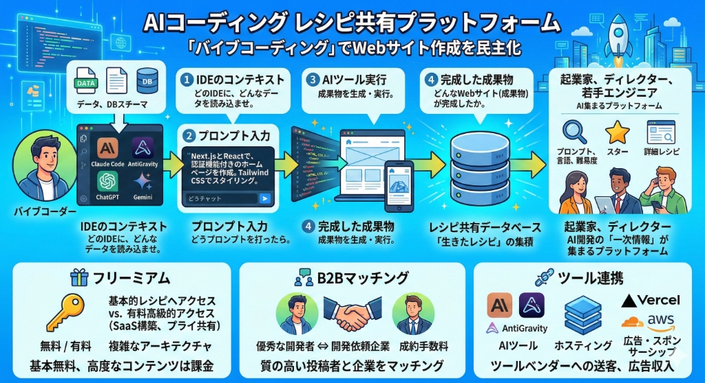
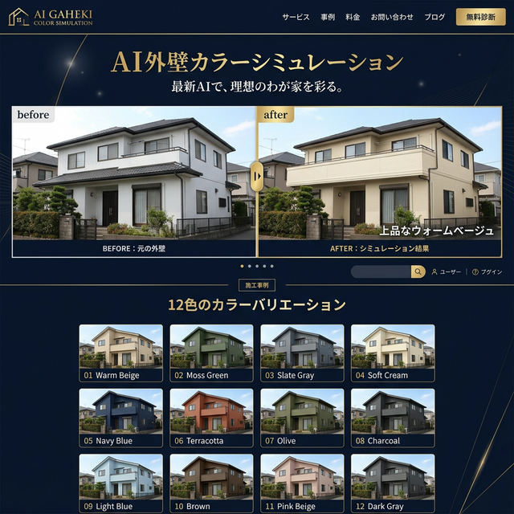

AIサービス案
AI技術を活用した革新的なサービスをご提案しています。
以下はその具体例です。
バイブコーディングによるホームページ制作のための
プロンプトと成果物のレシピ共有サイト
AntiGravityやClaude CodeなどのAIツールを使った「プロンプトと成果物のレシピ共有サイト」です。
「どのIDEに」「どんなコンテキスト（データ）を読み込ませ」「どうプロンプトを打ったら」「どんなWebサイト（成果物）が完成したか」。
この一連の流れを誰もが投稿・共有できるプラットフォームを作ります。
AI開発の「一次情報」が集まるプラットフォームを目指します。

👇 AI（Gemini）と壁打ちした客観的評価とビジネスプラン
1. 事業の妥当性（なぜ今やるべきか）
ソフトウェア開発のボトルネックが「プログラミング言語の習得」から「適切なコンテキスト設計とプロンプト技術」へと完全に移行している現在、現場で実際に動いたAIコーディングの「一次情報（生きたレシピ）」は最も価値が高い。
非常にタイムリーで、スケールする可能性を秘めた秀逸な事業モデル。
2. ターゲット戦略
AIを駆使して高速で個人開発を行うアーリーアダプター。「自分の知見を資産化・自己PRしたい」層を熱狂させ、良質なUGCを蓄積。
アイデアはあるがコードが書けない起業家、ディレクター、開発コストを下げたいWeb制作会社、最新手法を学びたい若手エンジニア。
3. ビジネスプラン（マネタイズの柱）
基本レシピは無料公開でトラフィック獲得。複雑なアーキテクチャや高度なプロンプトチェーン（認証付きSaaS構築レシピ等）を有料化。
優秀なバイブコーダーと開発を依頼したい企業をマッチング。紹介料・成約手数料を獲得。
利用されたAIツールやインフラ（Vercel、Cloudflare等）への動線を設け、アフィリエイト報酬やスポンサーシップを獲得。
📊 市場リサーチ（Manus調査）
- 世界のAIコードアシスタント市場は2025年に約39億ドル、2034年には約991億ドルに成長予測
- 日本のAIシステム市場も急成長中、2024年に1.3兆円を突破
- AIエージェント元年！コード補完から「自律エージェント」へシフト
- プロンプトだけでなく「コンテキスト」と「レシピ」の重要性が急増
- AI高速開発者、非エンジニア起業家、企業開発チーム
- 課題は「どのツールをどう使うか不明」「プロンプトだけでは再現できない」
- プロンプトエンジニアリング市場は30%以上の成長見込み
- リスクは既存ツールの共有機能強化やGitHubの類似機能標準化
⚔️ 競合リサーチ（Manus調査）
| 競合 | 特徴 | 弱点 |
|---|---|---|
| Lovai | AIプロセスを構造化共有するSNS。ブロック単位有料化 | コーディング特化度が低い |
| PromptBase | プロンプト特化の最大級マーケットプレイス | プロンプト単体販売が主 |
| Zenn / Qiita | エンジニア向け技術ブログ。既存コミュニティが強い | 構造化データとしては不向き |
| GitHub Cookbooks | 公式ガイド集。高品質 | ユーザー投稿型ではない |
- 「IDE × コンテキスト × プロンプト × 成果物」をパッケージ化
- 成果物のプレビュー連携で「買えば作れる」確信を提供
AIエージェント普及で「コンテキスト設計」が核心に。次世代GitHubのポテンシャル大。
MVP開発、初期コミュニティ形成、エコシステム連携が鍵。
AI外壁カラーシミュレーション
外壁塗装業者様向けの提案です。
お客様がスマートフォンで撮影した自宅の外観写真を1枚お送りいただくだけで、AIが12種類の美しいカラーパターンで塗り替え後のイメージを一括生成します。
現在はお申し込みをいただいた後、手動でAI画像を生成してお届けする形ですが、ニーズがあればお客様自身が写真をアップロードするだけで自動シミュレーションできるWebサービスとして開発・提供することも可能です。
外壁塗装の営業ツールとして、「施工前に完成イメージを共有できる」ことで受注率向上に貢献します。

お客様のスマホ写真からAIがカラーシミュレーションを作成
AIが多彩なカラーバリエーションをまとめて提案
施工前に完成イメージを共有し、お客様の決断を後押し
ニーズに応じてWeb上で自動シミュレーションできるシステムの構築も